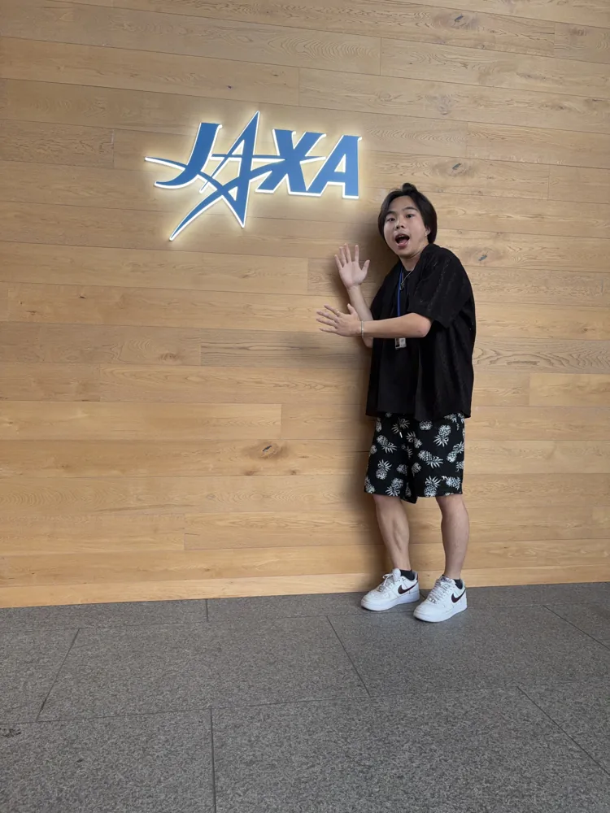
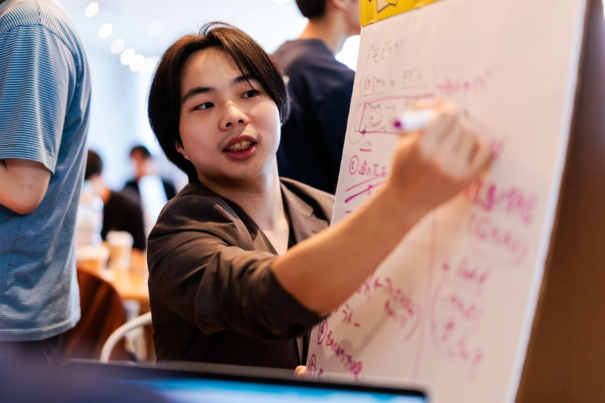
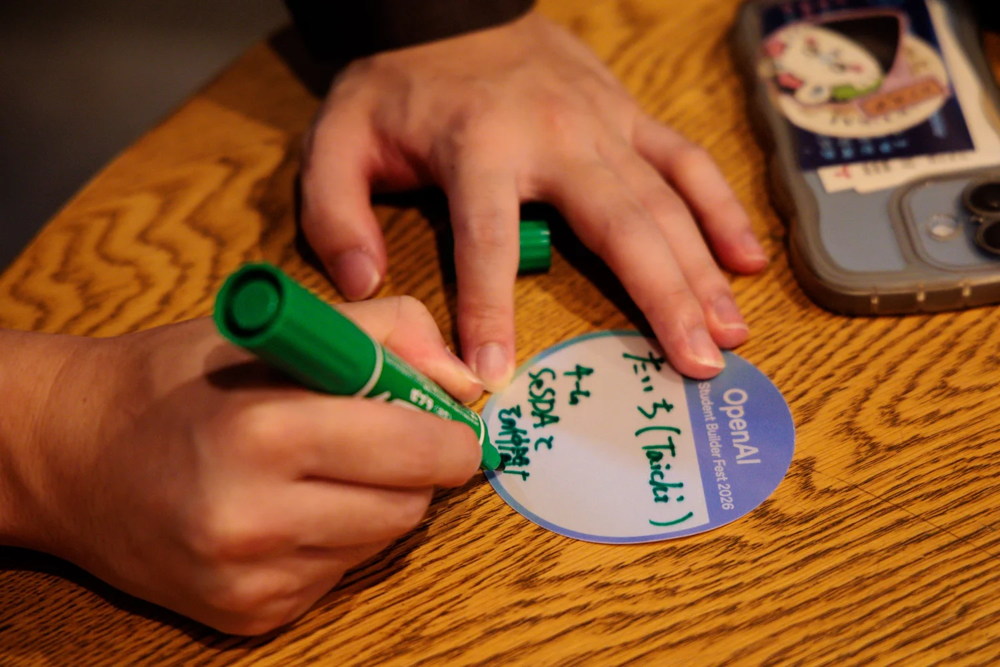
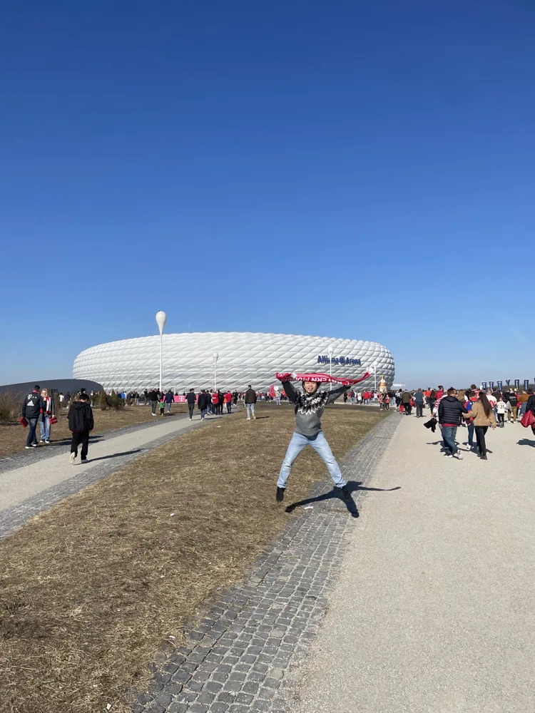
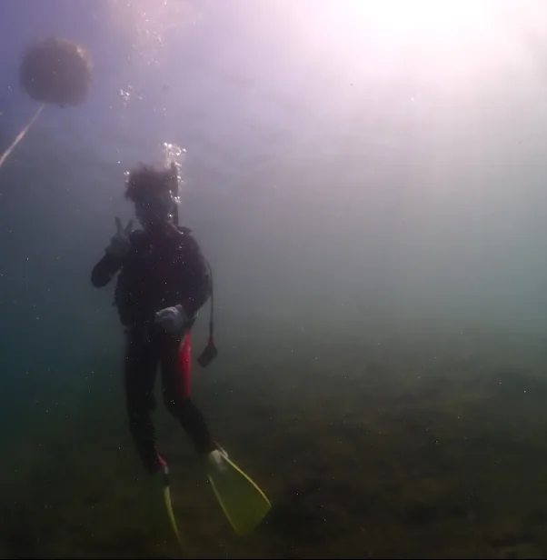

外惑星探査のミッション設計と軌道最適化
超小型外惑星探査機による多点同時観測のミッション設計と、Julia・DDPを用いた低推力軌道最適化。
2026年3月の惑星圏シンポジウム（SPS 2026）で口頭発表。2026年11月の第70回宇宙科学技術連合講演会で、HDDPを用いた低推力多重周回軌道のフィードバック制御・再最適化についてポスター発表。

超小型外惑星探査機による多点同時観測のミッション設計と、Julia・DDPを用いた低推力軌道最適化。
2026年3月の惑星圏シンポジウム（SPS 2026）で口頭発表。2026年11月の第70回宇宙科学技術連合講演会で、HDDPを用いた低推力多重周回軌道のフィードバック制御・再最適化についてポスター発表。
Transformerで同定したモデルと非線形モデル予測制御を組み合わせ、ラジコンカーの実時間自動追従を実機に実装。
月面探査用の多脚モジュールロボットを対象に、強化学習・逆運動学・Sim-to-Real環境を研究。
先端学術院 先端学術専攻 宇宙科学コース・5年一貫博士課程。尾崎直哉研究室（Mission Design Lab）。
工学部物理工学科 宇宙基礎工学コース・学部4年生。2027年3月卒業見込。
70th UKAREN
69th JSAEM
2026.09.15
日陰を通る最短経路を探索する地図サービス「WalkIsFun」を3人チームで開発。PMを担当しました。




陸上競技、少林寺拳法、筋トレ、ウクレレ、料理、歴史、将棋、盆栽、現代短歌、コーヒー、ビール（バイツェン）。
所属・活動：京都大学医学部陸上部／将棋部／京大マイコンクラブ／宇宙医学若手コミュニティ／Moon Village Association勉強会
インタビュー・3月24日号
インタビュー
インタビュー
インタビュー・紙面掲載
冬号（No.13）「ワラ30本の正月飾り」
研究、企画運営、国際交流、スポーツ。81件の活動記録。
メールまたはLinkedInからご連絡ください。